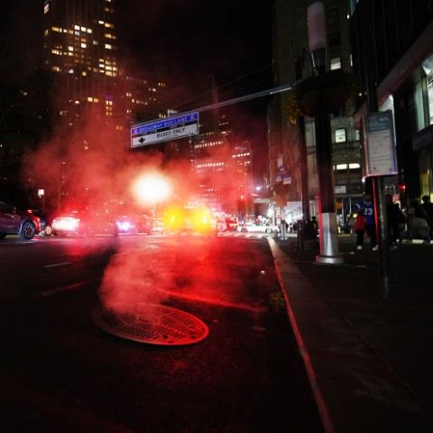
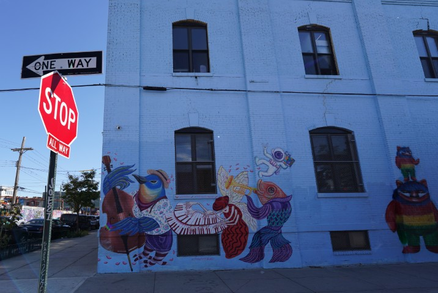
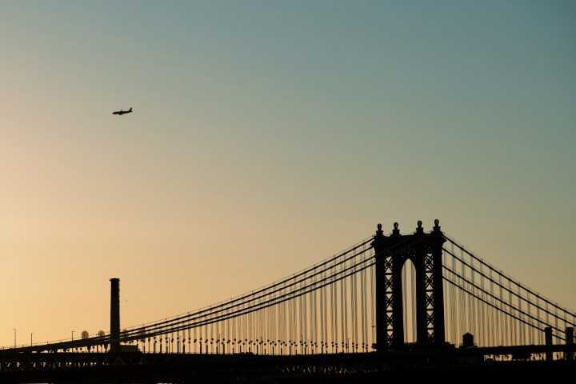

New York City
Patrick Brosset - October 2024
Smoke rising from a manhole
Hot-dog stand

Graffitis in Brooklyn
Bridges and Buildings

Glass buildings

The Brooklyn Bridge

Times Square

More glass buildings

Statue of Liberty

Plane
The Westfield World Trade Center

Biking

The High Line

Subway scene

Broadway & Murray

Beneath the Brooklyn Bridge

Times Square

The statue, at sunset